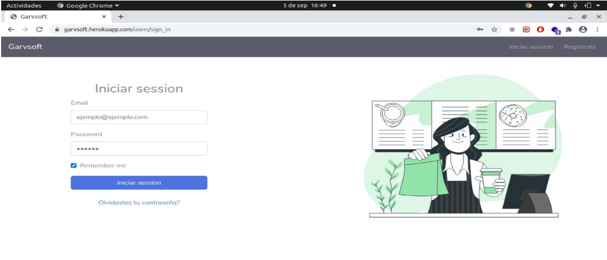
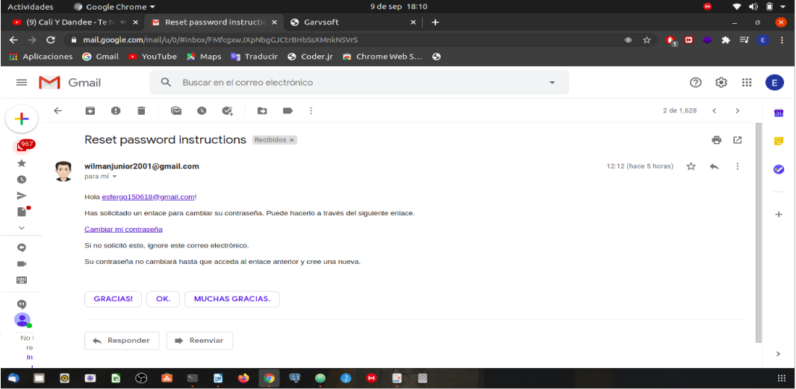
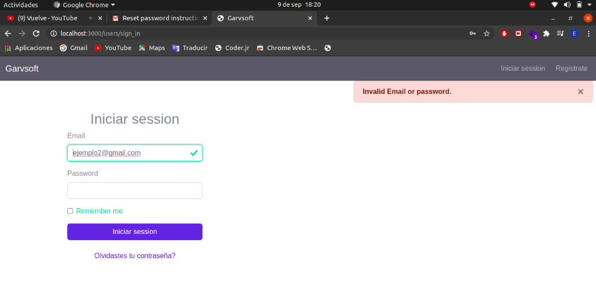
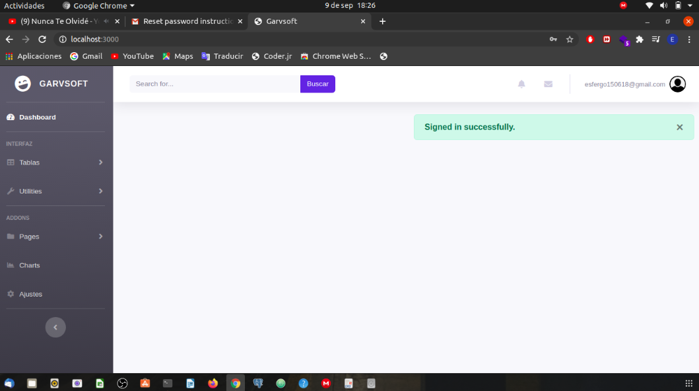
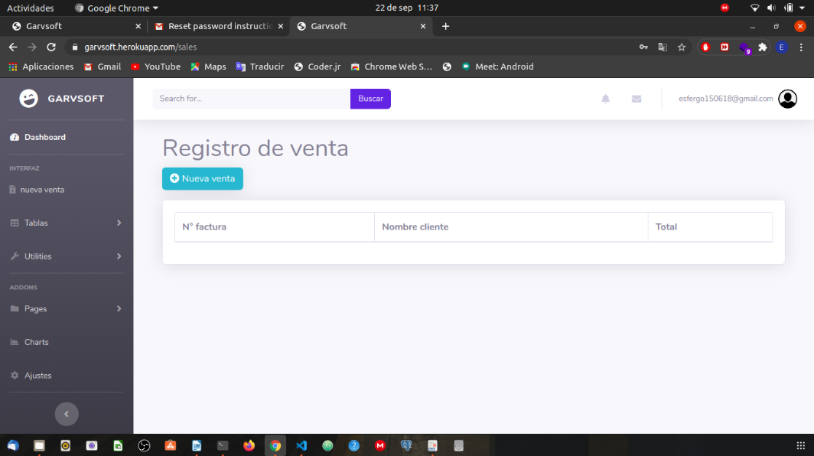
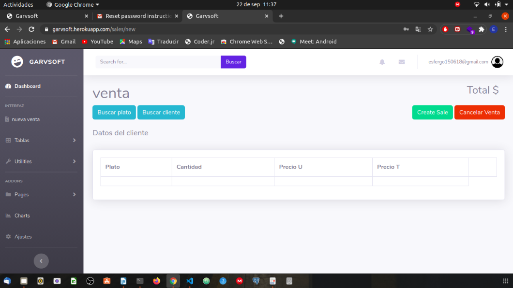
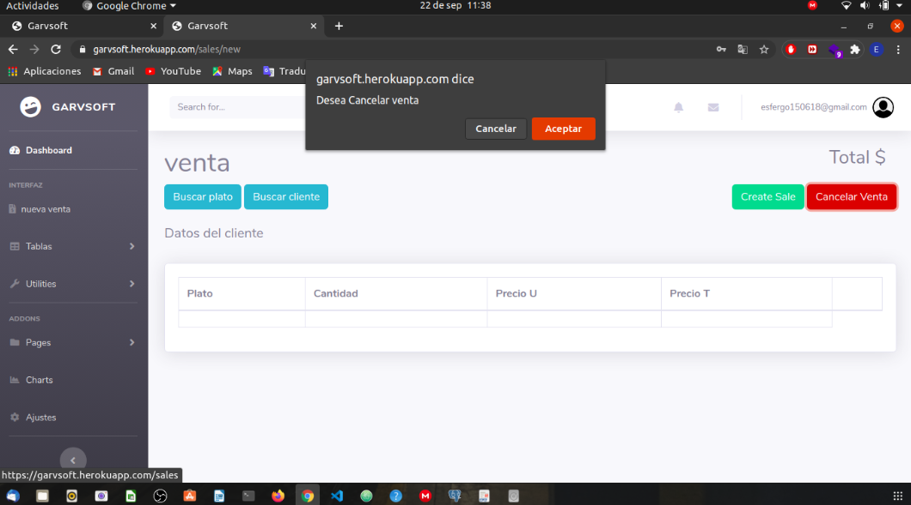

Este proyecto consistirá en desarrollar un aplicativo web basados en el punto de venta y modulo post del restaurante, que permitirá llevar una mejor organización sobre el registro de ventas que se hacen, así el administrador y empleado en especifico podrán tener registros de la venta diaria con sus respectivas fechas y pedidos hechos por los clientes. También incluirá:
Para el uso correcto del aplicativo, el usuario deberá tener en cuenta los siguientes conocimientos generales informáticos para una mejor experiencia en su uso. Estos son:
En este formulario muestra la vista login (url:garvsoft.herokuapp.com/users/sign_in), en cual contiene una tarjeta, dentro se encuentran los diferentes inputs los cuales contendrán la información que ingresará el usuario para posteriormente acceder al aplicativo. En la fig2 se hace la inserción de los datos, se reflejaría de la siguiente forma a mostrar.
Como se observa en la fig2, hay un label en cual nos informa que si ‘olvidamos la contraseña’ procediendo a dar clic, nos redirecciona a una nueva vista que estará en la ruta (http://garvsoft.herokuapp.com/users/password/new), en esta dispondremos un correo electrónico donde nos llegará un email (img de muestra)
con la información con instrucciones donde podemos encontrar un link ‘cambiar mi contraseña’ donde nos redirige a la siguiente URL (http://garvsoft.herokuapp.com/users/password/edit?reset_password_token=wdxx4UbDep4yXzq1xhf9).
En caso tal de que por algún motivo el usuario o cualquier otra persona intente ingresar el aplicativo sin antes registrarse o hacer el registro en la base de datos el usuario que intenta acceder no podrá ingresar por eso le mostrará el siguiente mensaje
Después de que el usuario haya ingresado sus credenciales de acceso, el sistema procederá a confirmar que los datos ingresados estén dentro del sistema, por lo tanto dispondrá de la siguiente vista
En esta encontrará la vista inicial del aplicativo, con un pequeño mensaje que le dirá ‘sesión iniciada correctamente’.
Ya dentro de la aplicación cada usuario que pueda acceder al sistema dispondrá de una serie de recursos y accesos dentro del mismo, con base al rol que se le hes asignado al usuario, las acciones que dispone el usuario admin es acceso a todo, el rol empleado sólo podrá realizar una venta, listar los clientes registrados por parte del restaurante, listar los platos que se encuentran disponibles dentro del mismo.
En esta imagen mostramos la interfaz de la venta como tal donde el empleado podrá ingresar los datos necesarios para gestionar la venta la cual es solicitada por parte del cliente.
También el empleado podrá cancelar la venta en caso de ya no sea necesario gestionar el pedido
Desarrollo e implementación del aplicativo gestión administrativa para el registro de ventas El Rincón Del Sabor.
Chrome o Firefox: navegadores web
Acrobat reader: familia de programas o aplicaciones informáticas desarrollados por Adobe, diseñados para visualizar, crear y modificar archivos con el formato Portable Document Format, más conocido como PDF
GarvSoft: compañia desarrolladora de sistemas de informacion
URL: significa Uniform Resource Locator (Localizador de Recursos Uniforme). Una URL no es más que una direccion que es dada a un recurso único en la Web.
MER: Modelo entidad-relación, una herramienta para el modelado de datos de un sistema de información
DER: es una herramienta de modelado de sistemas, que se concentra en los datos almacenados en el sistema y las relaciones entre éstos. Un diagrama de entidad-relación o DER es un modelo de red que describe la distribución de los datos almacenados en un sistema de forma abstracta.
postgresql: es un servidor de base de datos objeto relacional libre, ya que incluye características de la orientación a objetos, como puede ser la herencia, tipos de datos, funciones, restricciones, disparadores, reglas e integridad transaccional, liberado bajo la licencia BSD. ... Actualmente estos son llamados objetos.